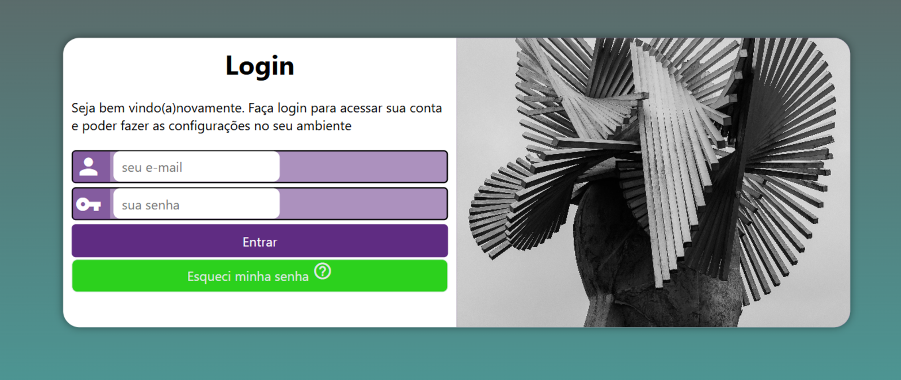

Minhas Skills
Formação
2022 - 2025
Una
Bacharel em Sistemas de Informação
Projetos

2026
Projeto de cordel
Desenvolvimento de um site temático sobre literatura de cordel, com aplicação do efeito parallax para criar uma experiência visual mais dinâmica e interativa durante a navegação.
Principais resultados:
O projeto resultou em uma interface interativa e visualmente atrativa, com uso do efeito parallax para melhorar a experiência do usuário. A estrutura organizada e responsiva garantiu uma navegação fluida, unindo conteúdo cultural com uma apresentação moderna.
Ver projeto online
2026
Projeto login
Desenvolvimento de uma página de login responsiva utilizando HTML e CSS, com foco na criação de um formulário estruturado e na adaptação do layout para diferentes tamanhos de tela por meio de media queries. O projeto foi pensado para oferecer uma interface simples, funcional e com boa usabilidade.
Principais resultados:
O projeto resultou na implementação de um formulário funcional e organizado, além de um layout totalmente responsivo, adaptável a dispositivos móveis e desktops. Também proporcionou a aplicação de boas práticas de HTML semântico e CSS, garantindo uma melhor experiência do usuário e um código limpo, estruturado e de fácil manutenção.
Ver projeto online

2026
Site de Notícias sobre Android (Responsivo)
Desenvolvimento de um site de notícias responsivo, focado na organização de conteúdo e na criação de uma interface moderna e adaptável para diferentes dispositivos..
Principais resultados:
O projeto resultou em um site organizado, com navegação intuitiva e layout responsivo, garantindo boa experiência em diferentes dispositivos. A definição de cores e tipografia contribuiu para um design mais claro, atrativo e profissional.
Ver projeto online